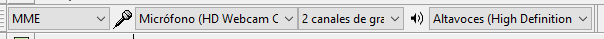
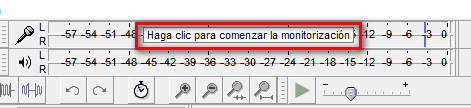
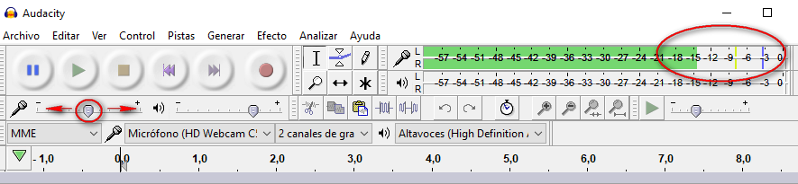
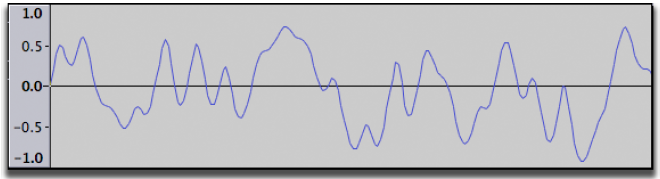
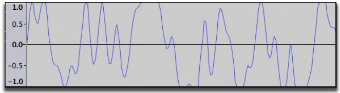
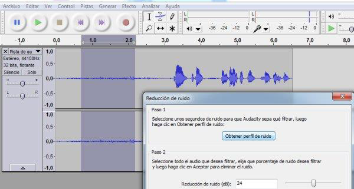
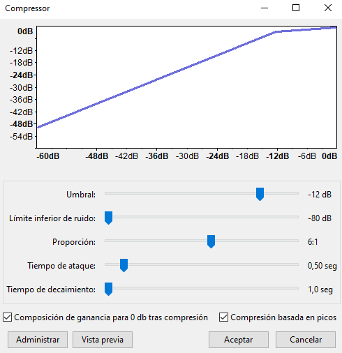

Seleccionar la entrada
El Servidor de audio es la interfaz entre Audacity y el dispositivo de sonido. MME es el predeterminado de Audacity y el más compatible con todos los dispositivos de audio.
Seleccionar el dispositivo de grabación preferido desde el menú desplegable de Dispositivo de grabación en la Barra de herramientas de dispositivos.
En el menú desplegable de Canales de grabación escoger mono (1 canal) o estéreo (2 canales). En general para grabar de un micrófono, elegir grabar en mono.

Realizar una grabación de prueba
- Clic en la flecha del símbolo del micrófono y seleccionar "Comenzar monitorización".
- Hablar a un volumen normal y mirar el medidor VU de grabación de color verde. Intenta alcanzar un pico máximo de alrededor de –6 dB

3. Ajustar el volumen de grabación con el deslizador de volumen de grabación de la derecha (con el símbolo del micrófono). Intentar que los medidores se acerquen al límite derecho sin tocarlo durante las partes más fuertes (-6 dB es un excelente objetivo).

4. Clic en el botón Grabar en la barra de herramientas de control. Grabar por unos segundos mientras hablas y Detener .
Ver la onda grabada, no debiera haber distorsión visible, ocurre cuando el volumen de la fuente que fue enviada a Audacity es más fuerte de lo que Audacity puede grabar. El resultado es que las partes altas y bajas de la onda grabada están cortadas ("distorsionadas"). Las ilustraciones a continuación muestran una onda grabada correctamente y una con distorsión. Una onda grabada correctamente se vería así:

Una onda con distorsión

Grabar
Haz clic en el botón rojo Grabar en la barra de herramientas de control, espera unos segundos y luego empieza a hablar. Al finalizar hacer clic en el botón Detener .
Eliminar ruido de fondo
Es importante que nuestro archivo de audio tenga unos segundos iniciales o finales en los que no hablemos para captar el ruido ambiente y ruido del micrófono.

Con la herramienta de selección de Audacity hemos de seleccionar, como veis en la imagen, una muestra de ese ruido de fondo que vamos a eliminar. Con la muestra seleccionada nos vamos a Efecto - Reducción de ruido - Obtener perfil de ruido. Hacemos clic en “Obtener perfil de ruido”. En este punto ya hemos captado nuestra muestra de ruido.
Ahora hemos de seleccionar el total de la grabación, y volver a Efecto -Reducción de ruido - Aceptar. Se aplicará la reducción de ruido a la grabación.
Ajuste de amplitud
Si el volumen de la grabación no es muy elevado podemos normalizarlo con el filtro Efectos > Normalizado....
Aceptar las opciones predeterminadas del diálogo de Normalizado. El volumen es normalizado a -1 dB.
Nivelando el volumen
Salvo que seas un narrador profesional o un especialista de voz, probablemente habrá variaciones de nivel (volumen) a lo largo de la grabación. Para corregir estos defectos vamos a utilizar el Efecto > Compresor.
El efecto Compresor funciona al disminuir el volumen de las partes fuertes,y luego amplificando todo, lo que termina haciendo que las partes con un sonido bajo suenen más fuertes.
Marcar Composición de ganancia para 0dB después de la compresión y Compresión basada en picos. Definir los siguientes niveles:
- Umbral a "-12 dB"
- Límite inferior de ruido a “-80 dB”
- Proporción “6:1”
- Tiempo de ataque a "0.5 segundos"
- Tiempo de liberación a "1.0 segundos".
